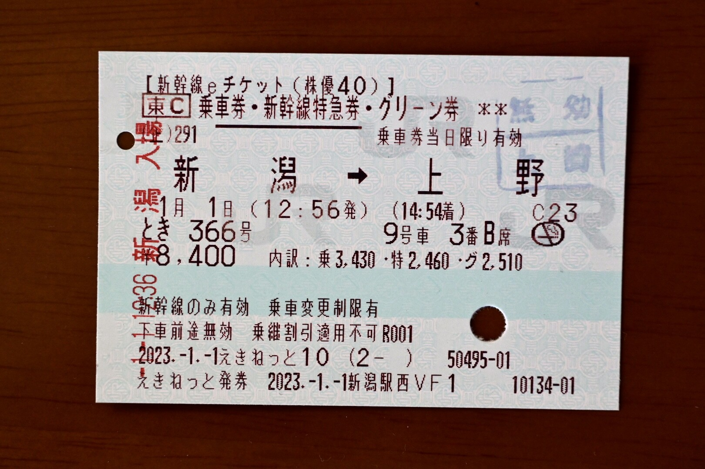
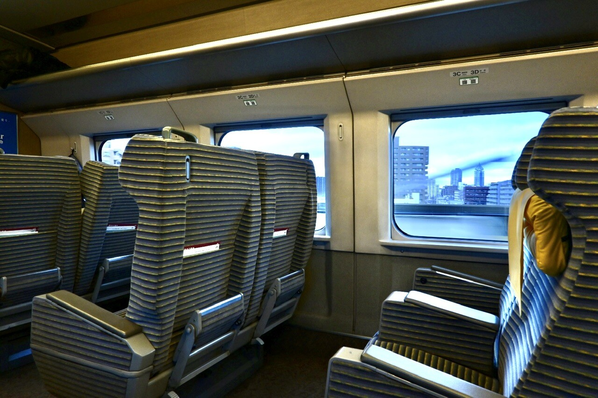
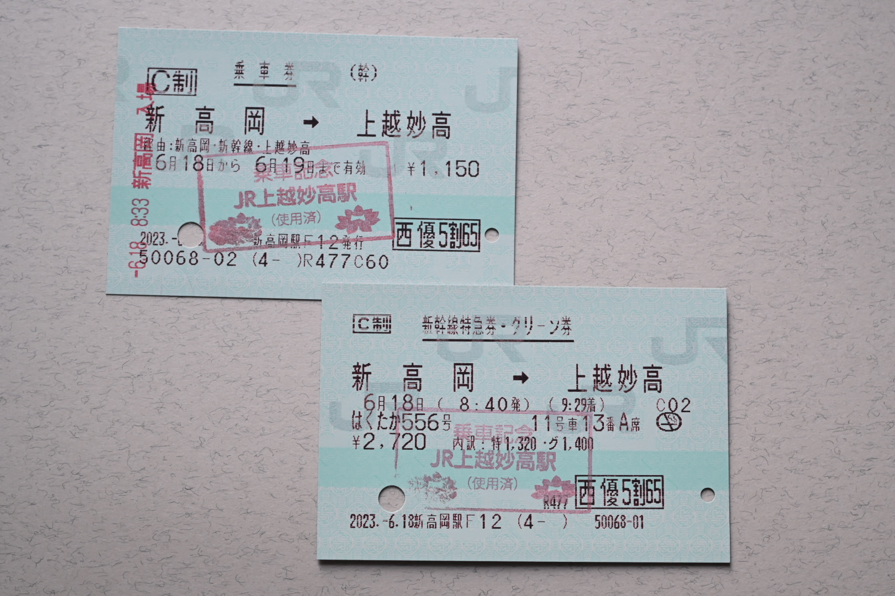
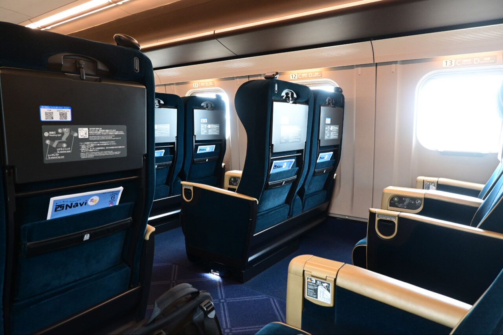

まちトドン Advent Calendar 2023 への寄稿記事になります。
本稿では #まちトドン株主部 でたまにトゥートしている保有株式の収支や株主優待について記しておきます。
2023 年は株式の売買を一切行いませんでした。
パンデミックからの回復と金利差に依る円安により株価は軒並み上昇しており、買い時と思われる銘柄がありませんでした。また、JR 東海の株式分割は気になりましたが、株主優待が1割引である点や、そもそも東海道新幹線に乗る機会が皆無であることから、買いませんでした。
| コード | 銘柄 | 保有数 | 買値 | 年初 | 現在 | 年初比 |
|---|---|---|---|---|---|---|
| 9020 | 東日本旅客鉄道 | 100 | 6,570 | 7,437 | 7,972 | +535 |
| 9021 | 西日本旅客鉄道 | 100 | 6,000 | 5,820 | 5,831 | +11 |
| 9142 | 九州旅客鉄道 | 100 | 2,500 | 2,880 | 3,108 | +228 |
| 8267 | イオン | 100 | 2,500 | 2,752 | 3,072 | +320 |
パンデミックからの想定以上の回復により鉄道各社は業績予想を上方修正しており、株価も上昇していますが、ここ数年のような乱高下は無いので面白味はないです。
この中で特筆すべきは JR 西日本です。私はパンデミック最中に 6,000 円で買いましたが、その直後に第三者割当増資を行い 4,800 円程度まで落ちていました。今年は 6,000 円前後で推移しており、増資前の株価まで戻っています。増資後に買い増しておけばよかったなあと思っても後の祭り......
| コード | 銘柄 | 保有数 | 2022年振込額 | 2023年振込額 | 配当率 |
|---|---|---|---|---|---|
| 9020 | 東日本旅客鉄道 | 100 | 7,970 | 8,368 | 1.05% |
| 9021 | 西日本旅客鉄道 | 100 | 7,970 | 10,560 | 1.81% |
| 9142 | 九州旅客鉄道 | 100 | 7,411 | 7,411 | 2.38% |
| 8267 | イオン | 100 | 2,870 | 2,870 | 0.93% |
保有銘柄の中では JR 東日本と JR 西日本が増配しました。相変わらず JR 九州の配当率の高さが目立ちます。

1月1日に株主優待を使用して、人生初の新幹線グリーン車に乗りました。1月1日は年末年始の繁忙期の中で特異的に空いている日だと思っていましたが、普通席は新潟から窓側が埋まる程度には乗っており、越後湯沢からはデッキに立ち客がいるほどには混んでいたようです。しかし、グリーン車は15人くらいしか乗っておらず非常に快適でした。

車内は絨毯が敷かれており足音がたつことはありませんし、車内で宴会は始めるような乗客もいないため、グリーン車の車内はとても静かです。百閒先生が阿房列車の中で「一等は乗客の態度が良い」というようなことを書かれていましたが、なるほど、百閒先生の云われたことが分かるような気がします。グリーン料金というのは車内設備に対するものではなくて、車内空間に対して払っているものだということを実感しました。
話は変わりまして、JR 東日本には長期保有優待制度があるので来年から鉄道優待券が2枚も送られてくる予定です。楽しみです。

6月18日に新高岡から北陸新幹線のグリーン車に乗りました。日曜早朝の上り列車でしたが、意外にも普通車はホーム上に行列が出来るくらいには混んでいます。でも予想どおりグリーン車は外国人旅行客2人と私しか乗っておらず、ほぼ貸し切り状態でした。グランクラスは車外から見た感じ誰も乗っていません。

正月に新潟から乗ったE2系グリーン車とは比較にならないほど静かで揺れない車内は、もはや移動の実感すら湧きません。東京まで乗っていきたいですが JR 西日本の優待なので、上越妙高で下車しました。
今年から鉄道の株主優待券は 5 割引券から 1 日乗車券に変更になっています。ただ、九州へ行く機会が無かったので使っていません。
イオンの株主優待には対象店舗で現金、WAON、イオンカードで決済すると年度末に利用金額の3%をキャッシュバックするという優待があります。
ただ、私は普段からセゾンカードと Suica しか使っていないので、この優待を利用する機会はありませんでした。
鉄道各社は想定以上に業績を回復できている印象があります。なので来年度の増配に期待したいです。
JR 西日本は売上が過去最高ということなので、鉄オタ的視点だと、ローカル線の廃止議論は停滞しそうな感じがします。売上が過去最高を更新している会社が廃線を申し出ても地元の理解を得るのは難しいように思いました。
まちトドン的には東京地下鉄株の上場が注目の的でしょうか。一人の利用者としては都営地下鉄と統合されないのは残念ですが、地下鉄株上場には期待したいです。